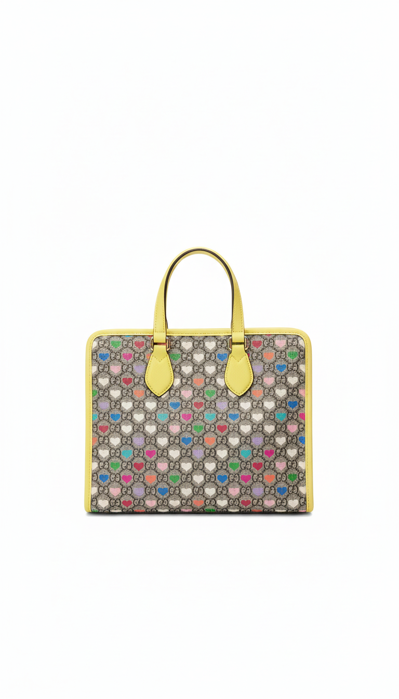
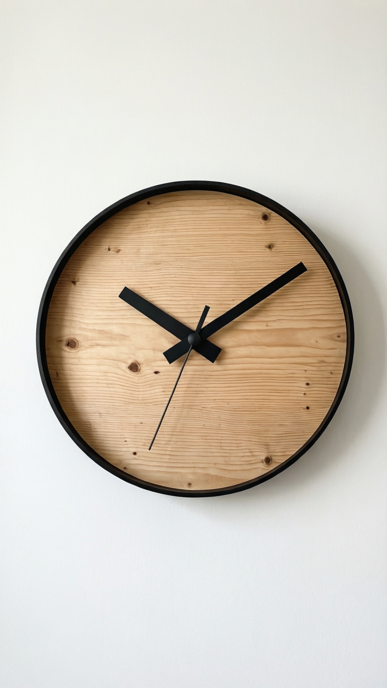
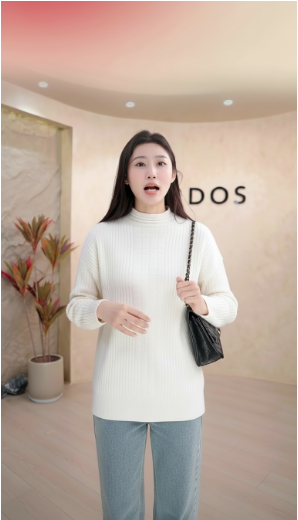
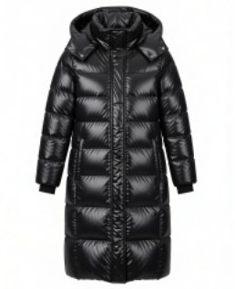
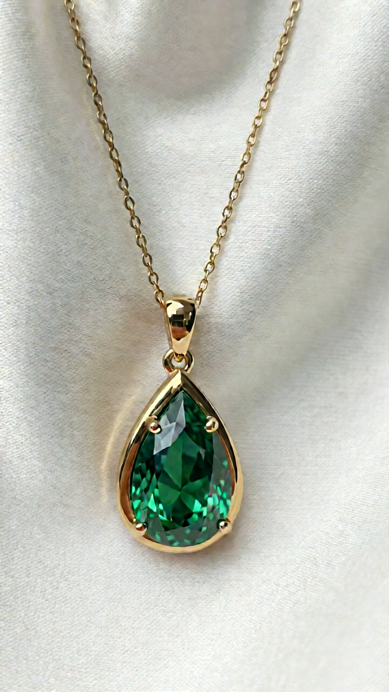
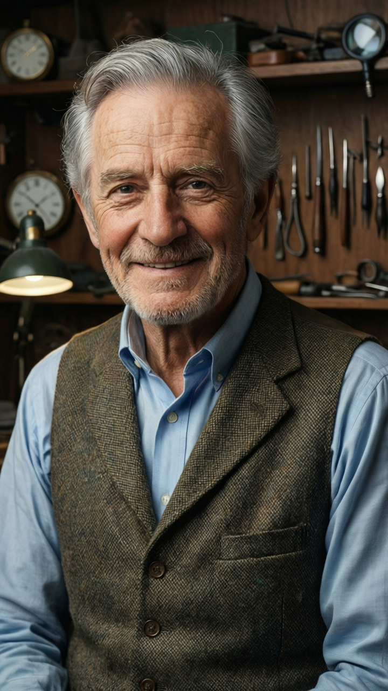
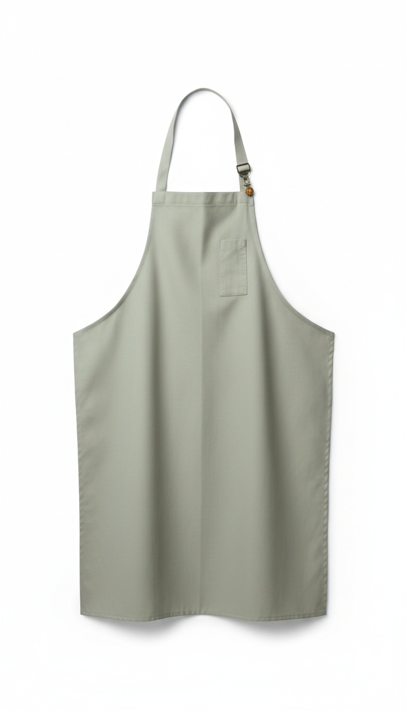
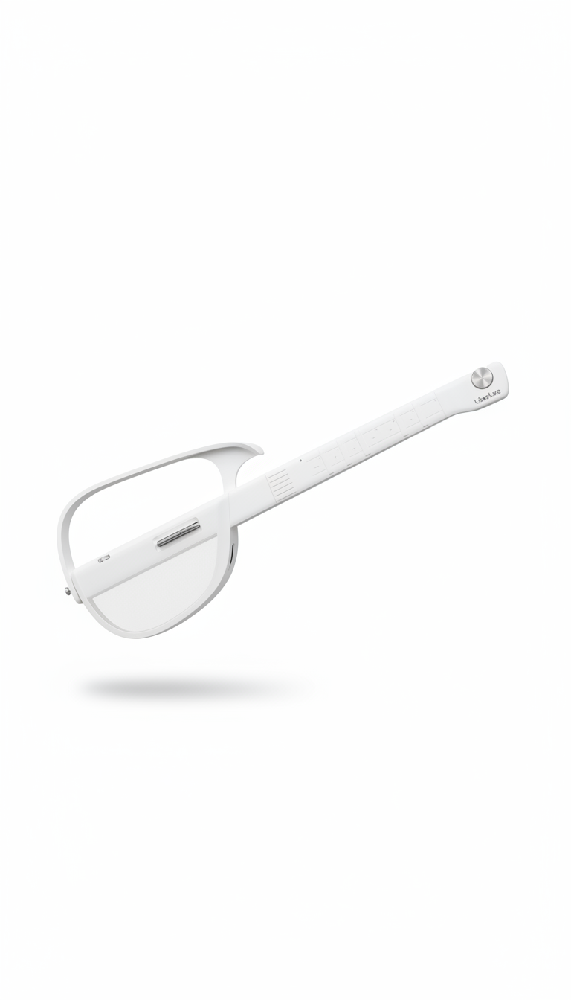

Demo Showcase
See It In Action
01Demo Gallery
Diverse object interactions across various real-world scenarios
02InteractDemo
Given a person image and a product image, CoInteract generates physically-consistent interaction videos

ProductA woman with shoulder-length dark hair, wearing a white textured short-sleeve top with black trim and dark gray pants, stands in a well-lit boutique environment. She holds a colorful patterned handbag with yellow trim in her left hand, gripping the top handle. She shifts her grip, moving her right hand to the front of the bag to gently press and smooth the surface, showcasing the pattern. She lifts the bag slightly upward and rotates it slowly to the left, allowing the camera to capture the side profile and the yellow trim along the edges.
She holds the colorful patterned handbag with yellow trim, rotating it back to a front-facing position and lowering it to waist height. Her right hand moves to support the bottom of the bag while her left hand remains on the handle. She tilts the bag gently forward, displaying the full front pattern and yellow trim along the lower edge to the camera.
She lifts the colorful patterned handbag with yellow trim back to chest height with both hands on the handle, holding it centered and steady in front of her body. She keeps the bag front-facing and still, allowing the camera to capture the complete design in a final display pose.
A man in his late twenties with a fade haircut and a gold chain, wearing a white oversized hoodie, baggy jeans, and chunky sneakers, standing in front of a concrete basketball court. The person picks up a hardcover cookbook with a linen spine in olive green and gold foil lettering with both hands and holds it near their chest, slowly rotating it a quarter turn to the right to reveal the side profile.
The person raises the hardcover cookbook closer to their face and examines it with a subtle smile, then turns it in a smooth half-rotation so the camera captures the opposite side. They lower it back to chest level and run their thumb across the front surface to emphasize material quality.
The person positions the hardcover cookbook front and center at mid-chest height, gripping it lightly with both hands. They look toward the camera with a confident but relaxed expression, holding the item motionless as a final product showcase before the video ends.
 Product
ProductA tall athletic man with a buzz cut and a relaxed expression, wearing a black turtleneck and tailored gray trousers, standing in a bright kitchen with white cabinets. The person reaches toward a glass teapot with a removable stainless steel infuser basket and lifts it from a surface, bringing it to mid-torso height. They hold it steadily with both hands and angle it slightly toward the camera.
Holding the glass teapot at chest height, the person slowly flips it over with both hands to reveal the bottom and back details. They trace a finger along a distinguishing feature, then rotate the item back to its original orientation, holding it slightly higher to catch the ambient light.
The person holds the glass teapot in a final display at chest height, right hand supporting the top and left hand cupping the base. The front details are centered and facing the camera as the person maintains a warm expression and a still, composed pose.
03Co-Generation
Dual-stream co-generation: RGB stream and HOI structure stream are jointly generated within a shared DiT backbone

Product04Human-Aware MoE
Spatially-supervised Mixture-of-Experts routes tokens to region-specialized experts (Head, Hand, Base)
05Use Case: Virtual Try-On
CoInteract enables physically realistic virtual try-on by synthesizing natural garment interactions

Person
Product
Product
Person
Product06SOTA Comparison
Comparison with state-of-the-art methods in human-object interaction video synthesis

Object